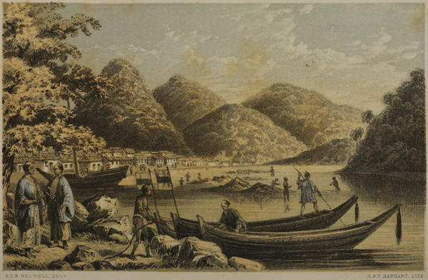

“Simoda”
Narrative of the Earl of Elgin’s Mission to China and Japan (1859)
Simoda is a mean place compared with Nagasaki; and it is difficult to conceive why Commodore Perry should have fixed upon it as a port. Even in those days it was little more than a fishing village, and since then it has been visited by an earthquake, from the effects of which neither town nor harbour has yet recovered. Always exposed, even where the anchorage was tolerable, there is now no holding-ground in the event of a storm, so completely did that terrible convulsion of nature change the surface of the bottom.
The town, which is situated at the debouching of the small river into the sea, is composed of a few mean streets, running at right angles to each other, and contains, probably, from three to four thousand in habitants. At one corner of it is a bazaar established for the benefit of foreigners, containing lacquer of a superior description to that exhibited at Nagasaki, and sundry articles of native manufacture I had observed before. Among others I bought some waterproof greatcoats for eighteenpence a-piece, made of wax paper, and as completely effectual in a storm of rain as the best macintosh that ever was manufactured. They are very light and portable, the only drawback being a liability to tear; but then they are half the price of a pair of white kid gloves.
These bazaars are the most tantalising of resorts. There is so much displayed, and it is all so beautiful and new that one walks through avenues of brilliant novelties in a stupefied condition of mind, and with a strong sensation of overwhelming responsibility. If anybody would only come and tell one which to choose, and what was most likely to be admired at home. Alas! everybody else is buying furiously; nobody seems to have a doubt upon the subject; all the best things are being bought up under your nose, and there you stand bewildered and dismayed; so you finally determine to buy recklessly and indiscriminately, until your pocket is emptied of its contents.
Narrative of the Earl of Elgin’s Mission to China and Japan (1859)
Simoda is not so good-looking a place as Nangasaki. The streets are narrow, and at their intersections have gates, which can be easily closed, should any emergency require it. At various points are placed stone monuments, on which are inscribed the municipal laws of the place, so that the population can at all times be acquainted with the laws by which they are governed. The houses, which are all finished in an ornamental style of stucco-work, and other materials, are nearly all of one story, and without chimneys. On the roofs are various kinds of wire-work, ingeniously placed, so as to prevent the crows, which are very numerous in the town, from alighting on the same. Behind the town is a beautiful valley, which extends several miles, through which a plentiful stream of water flows. On the banks of this river are located rice and grain mills. The high and mountainous hills, which surround the town on all sides, are thickly wooded, and present a beautiful appearance from the shipping. There are about eighteen hundred houses in the town, each one of which contains from ten to fifteen inmates. The harbor of Simoda resembles very much in shape a fan. The town of Simoda is in a bight on the left of the harbor, and cannot be seen until you are well in, and pass the high bluffs which hide it from the entrance. Less than a mile from Simoda is a beautiful white, shiny beach, hard enough for a racecourse, over which the swell of the ocean sweeps twice a day. In the rear is a little village occupied by fishermen.
A Cruise in the U.S. Steam Frigate Mississippi (1860)
◀ Seto Inland SeaShimonoseki ▶